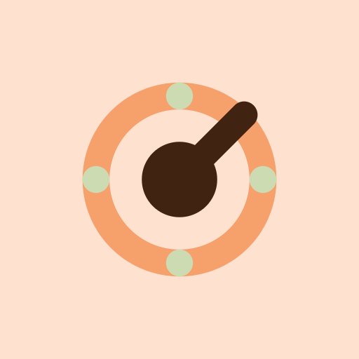

Riferimento corrente per tutto ciò che accade prima che il vault si apra. Sostituisce le schermate database e unlock di 01-02 Database & Unlock; contratto di comportamento e di copy in spec 025 (issue #275). Una sola gerarchia dei dati su ogni schermata, sempre nello stesso ordine: sorgente/account, poi file database, poi credenziali.
Percorso Apri: Welcome → dove si trova → (Drive: elenco file) → eventuale conflitto → Sblocca → vault. Percorso Crea: Welcome → Crea 1 → Crea 2 → vault, direttamente. Sblocca serve anche ogni riapertura e ogni scelta dalla lista. Stessi flussi e stesso albero di widget su ogni piattaforma: una capacità assente è un'opzione disabilitata con la sua ragione, decisa in un punto solo.
ImplementatoI frame riportano il copy e il comportamento implementati dalla spec 025. Dove l'implementazione si discosta dal mockup approvato, il frame mostra la versione implementata e la didascalia lo dice con Diverge dal mockup. Solo telefono 390×844 chiaro: tablet/desktop e dark non sono nei mockup approvati, per quelli valgono la spec 025 e i golden db_* / unlock_*.

Custode keeps your passwords in a KeePass database. Keep it on this device or in your own cloud.
Punto di partenza di entrambi i percorsi. Le tre azioni di 01-02 diventano due: Create new database apre direttamente il wizard (gruppo 02), Open a database apre il foglio sorgente. Implementazione (spec 025, T207): blocco identità centrato nello spazio libero, pill fissate in basso, larghezza massima 480.
Custode only reads the file you pick. Your master password never leaves this device.
Percorso Apri, passo 1: la sorgente viene prima del file. Il foglio compare solo in Apri (correzione ai mockup: Crea sceglie la sorgente nel suo passo 1). Drive non connesso mostra Not connected e Connect; connesso mostra l'etichetta dell'account e il chevron. Senza sorgente remota (web) la card resta al suo posto, disabilitata, con Not available in the browser. Diverge dal mockup: This device usa il glifo monitor (AppGlyph.desktop) su ogni superficie, non lo smartphone disegnato.
Custode only reads the file you pick. Your master password never leaves this device.
Percorso Apri, passo 2 (solo Drive): account in testa, visibile e davvero cambiabile con Switch account, poi i file. Already added marca i file già in lista. Diverge dal mockup: la riga mostra la data assoluta (Modified 12 Mar 2026) e non quella relativa (Modified yesterday), perché la riga è condivisa con il picker di Sync e una data relativa legherebbe i golden all'orologio (T203). L'elenco sta dietro pickRemoteFile: la spec 013 lo sostituirà con il Google Picker. Stato vuoto: solo Switch account, niente «Create & upload».
Percorso Apri, passo eventuale: sostituisce sia il dialog di sovrascrittura per nome sia il foglio duplicati di 01-02. Nomina il file in arrivo e quello esistente, ciascuno con la sua sorgente. Recommended compare solo per corrispondenza di sorgente o di hash; con il solo nome uguale nessuna opzione è raccomandata. Chiudere il foglio in qualunque modo vale Cancel: l'import in staging viene scartato. Dopo la scelta si arriva a Sblocca (gruppo 03).
Percorso Crea, passo 1: dal Welcome (o dal foglio Add) si arriva qui direttamente, senza foglio sorgente. La gerarchia è la stessa: prima la sorgente (This device predefinita, oppure Google Drive con l'account o Not connected + Connect), poi il file con la didascalia viva Saved as <name>.kdbx. Scegliere Drive crea davvero il file su Drive; niente «Create & upload» finto.
Percorso Crea, passo 2: le credenziali, ultimo livello della gerarchia. Alla conferma si entra direttamente nel vault, senza passare da Sblocca e senza ridigitare la password. La riga key file apre un foglio con Choose a file e Generate a new key file. Diverge dal mockup: lo switch è il KvSwitch del design system (44×26, acceso accent-2-400), non quello 52×30 accent-900/accent-300 disegnato; la barra di forza riusa StrengthBar (qui i colori del mockup). Su web l'azione scarica il database e la didascalia diventa Downloads the database. The browser keeps nothing.
Ultimo passo del percorso Apri, e anche la schermata di ogni riapertura e di ogni scelta dalla lista. Stesso ordine di sempre: chip della sorgente con l'account, nome del database, credenziali. Il key file è uno slot fisso e sempre visibile, non più un link; Use biometrics compare solo se la protezione biometrica è attiva e disponibile. Il nome è mostrato senza estensione. Sostituisce le schermate Unlock di 01-02 (pulsanti Unlock vault / Unlock with key file, link Use a key file).
Ogni errore sta dentro il gruppo delle credenziali, mai in uno snackbar. Con il key file scelto la riga mostra nome, Stored in Custode e il pulsante Remove key file (cerchio 36 dentro un bersaglio 44). Diverge dal mockup: il messaggio è il testo d'errore del campo, senza icona (il mockup lo precede con un cerchio-punto esclamativo da 14).
The file is no longer where Custode last saw it.
Il file mancante non è più un vicolo cieco: da qui si può ritrovarlo, riscaricarlo o toglierlo dalla lista. Download again from Google Drive compare solo se il database ha una mappatura remota e la piattaforma ha la sorgente remota. File non valido, corrotto o con metadati illeggibili tengono la vista di errore esistente.
You can change this anytime in Settings.
Offerta unica, dopo il primo sblocco manuale riuscito, uguale per ogni sorgente: sostituisce il prompt dopo l'import da Drive di 01-02 (che per un import locale non compariva affatto). Qualunque risposta, anche la chiusura, vale come risposta data. Enable salva subito la credenziale, senza una seconda autenticazione. Diverge dal mockup in due punti: il corpo è You can change this anytime in Settings. (quello disegnato era un'annotazione del designer, decisione D3) e il foglio sta sopra la schermata Sblocca, non sopra il vault (decisione D5). La creazione segna l'offerta come già risposta.
La lista ripete la gerarchia: gruppi per sorgente e account, dentro i database, e su ogni riga le credenziali come tag (Biometrics, Key file). Una sola azione primaria, il «+» (Add database). Toccare una riga porta a Sblocca; la riga File not found ha Locate e, se toccata, apre Sblocca nello stato file mancante. Diverge dal mockup: lo stato di sync ha granularità di un giorno (Synced today, Synced 3 days ago), non Synced 2 min ago, e un database collegato mai sincronizzato non mostra la riga di stato (T402). Il gruppo locale si intitola On this device, le intestazioni sono icona + etichetta. Sostituisce «Database recenti» e la sezione Add di 01-02.
Le stesse due azioni del Welcome, con la stessa destinazione: Create new database apre il wizard (percorso Crea), Open a database apre il foglio sorgente (percorso Apri). Non esiste una terza superficie per aggiungere.